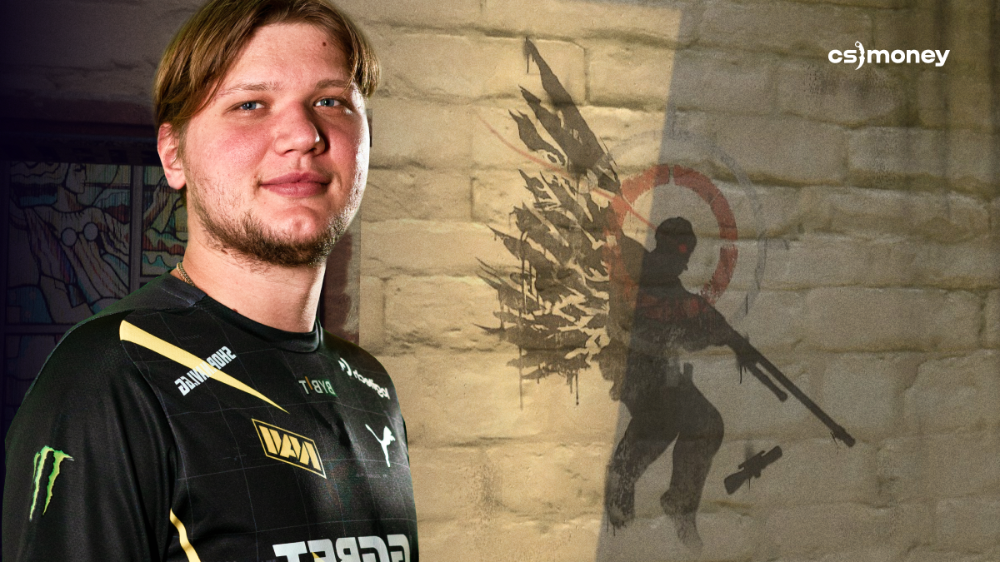

S1mple | Descended from the Heaven
On Cache, you can find an image of a winged s1mple with an AWP. It’s located at the B Plant entrance from the CT side. As you can see, it’s a sniper hovering on wings, and the scope of his rifle is dropping to the ground. Well, who needs it when you can perform such a miracle to win the round?
This legendary CS:GO moment occurred in the semi-finals of ESL One: Cologne 2016. Imagine the hype and love from the community if it survived a complete Cache rework? While the first version of the new map lacked graffiti, you can now easily find it at the same spot where both frags were made.